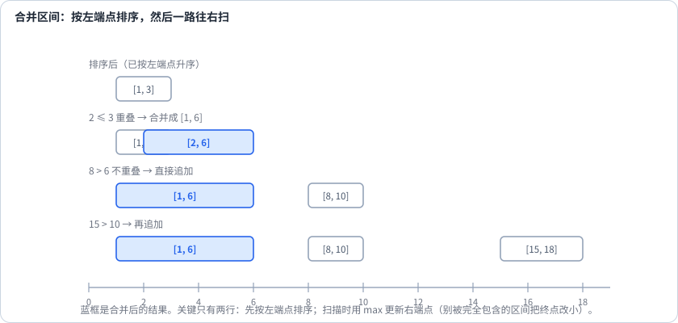
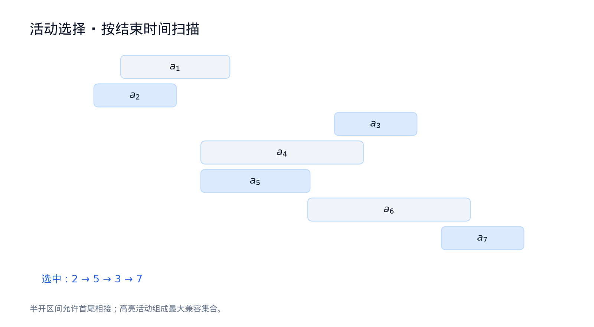
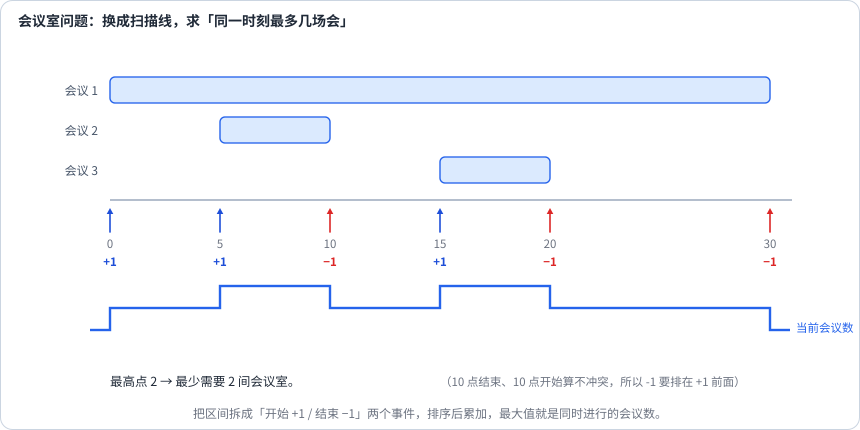

第 25 讲 · 区间调度与合并¶
阅读起点：第 24 讲：交换论证；第 12 讲：堆。
首读范围：先分清合并、选择、分房三种目标；离线查询选读。
区间问题有一个很特别的性质：算法本身简单得不像话——大多是"排一次序 + 扫一遍"，抄在纸上不超过十行；但排序用的那个 key 一旦选错，就全盘皆输。
所以这一讲要回答的其实只有一个问题：
面对一堆区间，什么时候按左端点排序，什么时候按右端点排序？
答案可以直接背下来，但更要能说出理由：
| 你要做的事 | 排序 key | 为什么 |
|---|---|---|
| 合并重叠区间、插入一个区间 | 左端点升序 | 起点递增之后，"当前区间是否与前一个合并结果重叠"只要比一个端点 |
| 选择互不重叠的区间、最少箭数 | 右端点升序 | 先固定最早结束的约束，再证明交换安全 |
| 分配会议室 | 开始时间 + 堆，或全部事件排序 | 要安排全部会议，求最大同时重叠数 |
不信的话看一个反例：[[1,100], [2,3], [4,5]]。按左端点排，第一个就是 [1,100]，选完只剩 1 个；按右端点排，可以选 [2,3] 与 [4,5]，拿到 2 个。同一组数据，两种排序，答案不同。
先读端点：合并区间和射箭通常按闭区间 \([s,e]\)，含两个端点；活动/会议按半开区间 \([s,e)\)，不含结束时刻。于是[1,2]与[2,3]闭区间相交，会议[1,2)与[2,3)却可接续。本讲每段代码沿用相应题目约定，不把一个条件带着等号抄到所有题里。
合并区间：按左端点，取 max¶
输入若干闭区间 [start,end]，允许无序、嵌套、重复，要求返回覆盖范围完全相同且彼此不重叠的区间列表。例如 [[1,3],[2,6],[8,10]] 应合为 [[1,6],[8,10]]。这不是选一部分区间，原来被覆盖的每个点都必须保留。空输入返回空列表。

def merge_intervals(intervals):
intervals.sort() # 按左端点排序
res = []
for start, end in intervals:
if res and start <= res[-1][1]: # 与上一个合并结果重叠
res[-1][1] = max(res[-1][1], end)
else:
res.append([start, end])
return res
max 不能省。 看 [[1,10], [2,3]]：第二个区间被完全包在里面，如果顺手写成 \(\mathrm{res}[-1][1] = \mathrm{end}\)，终点会被改小成 3，等于把 [1,10] 硬生生截断。
为什么这里必须按左端点？因为合并的判断是"新起点 不大于 上一个结果的终点"。起点递增之后，每个区间只需要和结果列表的最后一个比一次，不会出现"得回头跟更早的结果比"的情况。换成按右端点排序，这个性质就没了。
插入区间：题目已经把数组排好了¶
输入 intervals 已按起点升序排列，且原有闭区间彼此不相交；另给一个 new_interval。要求把新区间加入覆盖范围，并合并因此相交的区间，返回新的有序列表。例如 [[1,3],[6,9]] 加入 [2,5]，结果为 [[1,5],[6,9]]。
因为原区间已有序，可以分三段处理：完全在新区间左边的直接保留；相交的并入新区间，同时更新它的右端；其余都在右边，整段接上。
def insert_interval(intervals, new_interval):
res = []
i, n = 0, len(intervals)
new_start, new_end = new_interval
while i < n and intervals[i][1] < new_start: # 阶段 1：整个在新区间左边
res.append(intervals[i])
i += 1
while i < n and intervals[i][0] <= new_end: # 阶段 2：与新区间相交，合并进来
new_start = min(new_start, intervals[i][0])
new_end = max(new_end, intervals[i][1])
i += 1
res.append([new_start, new_end])
res.extend(intervals[i:]) # 阶段 3：剩下的都在右边
return res
题目还保证原区间互不重叠，并已按起点排好序，这就是在提示你：可以做到 \(\mathcal{O}(n)\)。写成"插进去、重排、再合并"当然也对，但那是 \(\mathcal{O}(n \log n)\)，面试里一定会被追问"能不能用上已排序这个条件"。
两个相位的等号是配套的：阶段 1 用严格小于（end < new_start，说明完全不沾边），阶段 2 用带等号（start <= new_end，端点相接也算重叠）。只改一个不改另一个，就会出错。
最少删掉几个区间：其实就是活动选择¶
输入若干 start<end 的区间，要求删除尽量少的整段，使剩下的区间不再重叠，返回删除数量；这里端点相接允许保留两段。例如 [[1,2],[2,3],[1,3]] 删掉 [1,3] 即可，答案为 1。
每段不是留下就是删除，最少删除数便等于 n 减去最多可留数。因此直接复用第 24 讲按结束时间选择活动的方法。

图中的 7 个活动按结束时间扫描，选出 \(a_{2}\)、\(a_{5}\)、\(a_{3}\)、\(a_{7}\)，灰色活动与已选活动冲突而被排除。这里的编号仅用于这张图；下面代码可以处理任意数量的区间。
def erase_overlap_intervals(intervals):
intervals.sort(key=lambda x: x[1]) # 按右端点升序
removed = 0
last_end = float('-inf')
for start, end in intervals:
if start < last_end: # 与已选的最后一个冲突，只能删掉
removed += 1
else:
last_end = end
return removed
注意这题问的是"删掉最少几个"，所以直接数冲突个数就行。等价的说法是 n - 最多能选出几个不重叠的区间——正着数和反着数是一回事，而按右端点排序这个前提没变。
最少几支箭：用点覆盖全部区间¶
每个气球用一个闭区间 [start,end] 表示水平范围。选一个横坐标 x 射箭，就能射中所有满足 start不大于x不大于end 的气球，一支箭可同时射中多个。要求射中全部气球，返回最少箭数。例如 [1,2] 与 [2,3] 可在 x=2 一箭射中，答案为 1；空输入不需要箭。
按右端点升序扫描，第一支箭放在最早结束的气球的右端；以后只有遇到当前箭射不到的区间，才再开一支。先看代码，再证明这个位置选择不会增加箭数：
def find_min_arrows(points):
if not points:
return 0
points.sort(key=lambda p: p[1]) # 按右端点升序
arrows = 1
end = points[0][1]
for start, e in points[1:]:
if start > end: # 这支箭射不到它
arrows += 1
end = e
return arrows
先证明第一支箭放在哪里。取右端点最早的区间 [s,e]，任意方案都要用一支位于 [s,e] 的箭 x 射中它。把 x 右移到 e：原先被 x 射中的其他区间，左端不大于x不大于e，而右端都不小于e（因为 e 最早），因此仍被 e 射中。箭数没增加，所以存在把第一支箭放 e 的最优方案。
删去所有被 e 射中的区间，剩下每个区间的左端都>e，重复同样的交换即可。两题都按右端点排序，但活动选择是在保留区间，射箭是在覆盖全部区间；需要分别说明交换为何安全。
判断写的是 \(\mathrm{start} > \mathrm{end}\)，因为本题是闭区间：端点相等时一支箭能同时射中两个气球。写成 \(\ge\)，答案就会多出来。
会议室：这是另一个问题¶

给定所有会议的起止时间，每场必须按原时间完整进行，不能删除或改期，同一房间同一时刻最多一场。返回安排全部会议所需的最少房间数。会议按半开区间 \([\mathrm{start},\mathrm{end})\)，且 start<end；空输入返回 0。
例如 [[0,30],[5,10],[15,20]] 需要两间：第一场单独占一间，后两场可以共用另一间。
这题不是"选择不重叠的区间"，而是"求同时进行的最大数量"。换了个问题，就得换工具：
def min_meeting_rooms(intervals):
events = []
for start, end in intervals:
events.append((start, 1)) # 开始
events.append((end, -1)) # 结束
events.sort() # 同一时刻，-1 排在 +1 之前
cur = ans = 0
for _, delta in events:
cur += delta
ans = max(ans, cur)
return ans
为什么同一时刻的"结束"要排在"开始"前面？ 因为本题的区间是半开区间 \([\mathrm{start}, \mathrm{end})\)——一场会 10 点结束、另一场 10 点开始，可以共用一间。(时间, 增量) 这样的元组排序天然让 -1 排在 \(+1\) 之前，正好对上这个约定。闭区间若相接也算冲突，应在同一时刻先处理开始，再处理结束。仅当端点是整数且按整数点覆盖时，才可用 end+1 转为半开区间；连续时间不能随意加 1。这里假设每场 start<end，零时长会议需按题意单独约定。
用最小堆也能做：按开始时间排序，堆里为每个已开房间保存“下次空闲时刻”。取堆顶就能知道是否至少有一间房已空闲。
import heapq
def min_meeting_rooms_heap(intervals):
intervals.sort() # 按开始时间排序
heap = [] # 每个房间的下一个空闲时刻
for start, end in intervals:
if heap and heap[0] <= start: # 已经有房间空出来了
heapq.heappop(heap)
heapq.heappush(heap, end)
return len(heap)
这份代码每次只弹出一个空闲房间，堆中保留的是所有已开房间下一次可用的时刻，不全是仍在进行的会议；大小表示已开房间总数。若有空闲就复用，否则必须新开，所以最终房间数最少。若想维护“正在进行的会议”，需 while 弹出全部结束项并另记历史最大堆大小。 这里的 \(\le\) 同样来自半开区间的约定；改成闭区间时要用 \(<\)。
选读：查询很多的时候，把查询排到一起处理¶
输入整数闭区间 intervals 和整数查询列表 queries。对每个查询 q，在包含 q 的区间中找最短者，返回它覆盖的整数点数 right-left+1；没有区间包含 q 则返回 -1。结果顺序必须与 queries 相同。
例如 intervals=[[1,4],[2,3]]、queries=[3,1,5]，答案是 [2,4,-1]。第一个查询选 [2,3]，第二个只能选 [1,4]。
每个查询都扫描全部区间会重复检查。先将查询按值递增处理，走到 q 时把所有 left不大于q 的区间加入最小堆，堆按长度排序；右端<q 的候选已无法覆盖当前或未来查询，弹出。另存原查询下标，才能把答案放回原来的位置。
import heapq
def min_interval(intervals, queries):
intervals.sort() # 按左端点排序
order = sorted(range(len(queries)), key=lambda i: queries[i])
res = [-1] * len(queries)
heap = [] # (长度, 右端点)
i = 0
for idx in order:
q = queries[idx]
while i < len(intervals) and intervals[i][0] <= q: # 把所有已经开始的区间压进堆
left, right = intervals[i]
heapq.heappush(heap, (right - left + 1, right))
i += 1
while heap and heap[0][1] < q: # 弹出已经过期的
heapq.heappop(heap)
if heap:
res[idx] = heap[0][0] # 堆顶就是覆盖 q 的最短区间
return res
这道题真正的突破是"离线处理"：查询之间互相独立，所以可以先不按输入顺序回答，而是把所有查询排序后一起处理，最后再照原顺序填回答案。查询值递增之后，"区间的加入"和"区间的过期"都变成单调的，每个区间最多进出堆一次，总复杂度为 \(\mathcal{O}(n \log n+q \log q+(n+q) \log (n+1))\)（含查询排序）。
堆顶按长度排序，不按右端点排序，所以堆里可能还藏着已过期的长区间。只需不断弹出过期的堆顶，直到最短候选合法即可；隐藏的过期项不会挡住更短合法项，将来露到堆顶时再删。这是第 18 讲同样用过的惰性删除。这里约定区间端点与查询均为整数，所以长度用 right-left+1。
为什么这些贪心是对的¶
合并区间的正确性。 要证两件事：结果互不重叠，而且并集和原来一样。
不重叠是构造出来的：只有 \(\mathrm{start} > \mathrm{res}[-1][1]\) 时才追加新区间，所以相邻两个结果的端点满足 \(\mathrm{res}[-1][1] < \mathrm{start}\)。并集不变看合并那一步：被并进 res[-1] 的区间满足 \(s \le \mathrm{res}[-1][1]\)，即与当前结果有交或相接；由于终点取的是 max，合并后的区间同时包含原来两个，并集一个点都没丢。反过来，任何一个点若被原区间覆盖，在那一步要么已经被并进 res[-1]，要么落在一个已经追加的区间里。
会议室问题的正确性。 设某个时刻有 k 场会议同时进行，那么这 k 场两两重叠，必须占用 k 间不同的会议室，所以答案 不小于 k。另一方面，按开始时间处理会议：若已有空房就复用；若所有已开房都占用，此刻新会议与每个在用房的会议同时进行，必须新开一间。每次增房都有一个同等数量的重叠下界作为证据，因此最终房数恰好等于历史最大重叠数，扫描线算的正是它。
删除冲突区间可直接用第 24 讲的活动选择证明；射箭则用本讲“把射中最早结束区间的箭右移到其右端点”的交换证明。两者都保留某个最优解，但交换的对象不同。
复杂度与几个例子¶
| 题目 | 排序 key / 工具 | 时间 | 空间 |
|---|---|---|---|
| Meeting Rooms（252） | 左端点 | \(\mathcal{O}(n \log n)\) | \(\mathcal{O}(n)\)（含 Python 排序工作空间） |
| Insert Interval（57） | 已经有序 | \(\mathcal{O}(n)\) | \(\mathcal{O}(n)\) |
| Merge Intervals（56） | 左端点 | \(\mathcal{O}(n \log n)\) | \(\mathcal{O}(n)\) |
| Non-overlapping（435） | 右端点 | \(\mathcal{O}(n \log n)\) | \(\mathcal{O}(n)\)（含 Python 排序工作空间） |
| Meeting Rooms II（253） | 扫描线 / 最小堆 | \(\mathcal{O}(n \log n)\) | \(\mathcal{O}(n)\) |
| Min Arrows（452） | 右端点 | \(\mathcal{O}(n \log n)\) | \(\mathcal{O}(n)\)（含 Python 排序工作空间） |
| Min Interval to Include Query（1851） | 离线 + 堆 | \(\mathcal{O}(n \log (n+1)+q \log (q+1)+q \log (n+1))\) | \(\mathcal{O}(n+q)\) |
合并：[[1,3], [2,6], [8,10], [15,18]]
| 区间 | 与 res 末尾比较 | 动作 | res |
|---|---|---|---|
| [1,3] | — | 追加 | [[1,3]] |
| [2,6] | 2 不大于 3，重叠 | 合并 | [[1,6]] |
| [8,10] | 8 > 6 | 追加 | [[1,6],[8,10]] |
| [15,18] | 15 > 10 | 追加 | [[1,6],[8,10],[15,18]] |
插入：intervals = [[1,3],[6,9]]，newInterval = [2,5]。
阶段 1: [1,3] 的 end=3 不比 2 小 → 进入阶段 2
阶段 2: [1,3] 的 start=1 ≤ 5 → 合并 → newInterval 变成 [1,5]
[6,9] 的 start=6 > 5 → 退出阶段 2，追加 [1,5]
阶段 3: 追加 [6,9]
结果 [[1,5],[6,9]]
会议室：[[0,30],[5,10],[15,20]]。
最少箭数：[[10,16],[2,8],[1,6],[7,12]]，按右端点排成 [1,6],[2,8],[7,12],[10,16]。
箭 1 放在 6：射中 [1,6]；[2,8] 的 start=2 ≤ 6，也一并射中
[7,12] 的 start=7 > 6 → 换新箭，放在 12
[10,16] 的 start=10 ≤ 12 → 被箭 2 射中
答案 2
它在题库里长什么样¶
| 题目 | 用到的本讲内容 |
|---|---|
| Meeting Rooms | 按左端点排序 + 相邻比较 |
| Insert Interval | 三段式扫描，利用已排序 |
| Merge Intervals | 按左端点排序 + max 合并 |
| Non-overlapping Intervals | 按右端点排序的活动选择 |
| Meeting Rooms II | 扫描线 / 最小堆 |
| Minimum Interval to Include Each Query | 离线 + 排序 + 堆 |
| Merge Triplets | 另一种"逐维合并" |
| Partition Labels | 本质是区间合并 |
从讲义走到代码¶
合并日历忙碌时段、挑最多场会议、给全部会议分配房间，是三个不同目标。
先做 Merge Intervals，测试 [[1,10],[2,3]]→[[1,10]]，防止合并时把右端点改小；[[1,2],[2,3]] 在闭区间约定下应合成 [[1,3]]。
再做 Meeting Rooms II，用 [[0,30],[5,10],[15,20]] 得 2；用 [[1,2],[2,3]] 得 1。先说明会议为半开区间，再决定同一时刻先处理结束事件。
练习¶
1. 给定四个活动 \(a_{1} = (1,5)\)、\(a_{2} = (3,7)\)、\(a_{3} = (6,9)\)、\(a_{4} = (2,4)\)，最优解是 2 个（\(a_{1} + a_{3}\) 或 \(a_{4} + a_{3}\)）。为什么 \(a_{4} + a_{3}\) 合法，而 \(a_{1} + a_{2}\) 不合法？
\(a_{4} = (2,4)\) 结束于 4，\(a_{3} = (6,9)\) 从 6 开始，中间没有重叠。而 \(a_{1} = (1,5)\) 与 \(a_{2} = (3,7)\) 在 3 到 5 这一段重合。
2. 用"结束最早优先"的贪心走一遍，看它选出哪两个。
按结束时间排序是 \(a_{4}(2,4)\), \(a_{1}(1,5)\), \(a_{2}(3,7)\), \(a_{3}(6,9)\)：
3. 如果把 \(a_{3}\) 改成 (5,9)，答案会变吗？
不变。\(a_{4}(2,4)\) 与 (5,9) 仍然不重叠（4 不大于 5），答案还是 2。这一例的 [2,4) 与 [5,9) 之间有空隙，并没有端点相接。若再把 \(a_{3}\) 改成 (4,9)，才会出现 [2,4) 与 [4,9) 相接：半开区间允许接续，闭区间 [2,4] 与 [4,9] 则在 4 相交。这就是为什么动手写代码之前要先确认题目用的是哪种约定。
4. 什么时候按左端点排，什么时候按右端点排？各举一题。
按左端点：合并区间（56）、插入区间（57）——"起点递增"让重叠判断只需要看一个端点。按右端点：活动选择（435）、最少箭数（452）——"结束最早"给后面留的空间最大，交换论证才成立。
5. 会议室问题为什么不能直接套活动选择的贪心？
活动选择求的是"在一条时间轴上最多选几个互不重叠的活动"，会议室问题求的是"同一时刻最多有多少个活动叠在一起"。一个是"选择"，一个是"计数"。会议室需要扫描线（把区间拆成 +1/-1 事件）或最小堆（堆里存结束时间），工具完全不同。
6. Partition Labels（第 24 讲）为什么说它"本质是区间合并"？
每个字符对应一个区间 [首次出现, 最后出现]。"同一字母只能落在一个片段里"等价于"把这些区间合并起来"，合并后每个区间的长度就是答案。先把每个字符的首次、末次出现位置构成闭区间，再调用区间合并；不是把原字符串直接传给 merge_intervals。
7. 实现 merge_intervals、insert_interval、erase_overlap_intervals，并分别说清各自的排序 key。
合并需按左端点排序；插入题已经按左端点排序且互不重叠；删除冲突区间按右端点排序。代码见上文三节。
8. 实现 min_meeting_rooms(intervals)，扫描线与最小堆各写一遍。
见上文"会议室"一节。堆解法是"按开始时间排序，堆里存结束时间，heap[0] <= start 时弹出一个，最后堆的大小就是答案"。
9. 实现 min_interval(intervals, queries)，并说明"离线"是什么意思、这里为什么可以离线。
"离线"指不按输入顺序回答，而是把所有查询排序后一起处理。这里不需要保持输入的先后关系，查询之间互相独立，所以随时回答都可以；正因为查询值递增，"区间加入"与"区间过期"才是单调的，堆的做法才成立。
10. 判断能否用一间会议室开完所有会议。
这就是 252 题：按左端点排序后检查相邻两场是否重叠即可。若题目用半开区间，判据是 intervals[i][0] < intervals[i-1][1]。